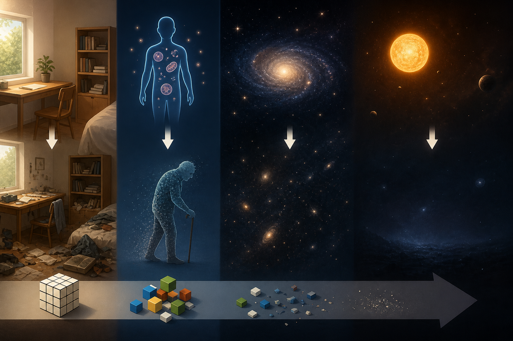

Entropy trong đời sống thường ngày

Entropy trong đời sống thường ngày đến cái kết của vũ trụ
Entropy là một khái niệm trong vật lý dùng để mô tả mức độ hỗn loạn hay mất trật tự của một hệ. Nghe có vẻ trừu tượng, nhưng thực ra entropy xuất hiện khắp nơi trong cuộc sống hàng ngày của chúng ta.
Hãy tưởng tượng một căn phòng gọn gàng. Theo thời gian, nếu không dọn dẹp, quần áo sẽ bừa bộn, đồ vật bị xáo trộn — đó chính là entropy tăng lên. Tự nhiên luôn có xu hướng chuyển từ trạng thái có trật tự sang hỗn loạn hơn, trừ khi có năng lượng được đưa vào để duy trì sự ngăn nắp. Việc bạn dọn phòng, sắp xếp bàn làm việc hay nấu ăn đều là những hành động “chống lại” sự gia tăng entropy bằng cách tiêu tốn năng lượng.
Trong cơ thể con người, entropy cũng đóng vai trò quan trọng. Chúng ta cần ăn uống để cung cấp năng lượng, duy trì cấu trúc và hoạt động của tế bào. Nếu không có năng lượng, cơ thể sẽ dần mất trật tự — dẫn đến lão hóa và cuối cùng là cái chết. Điều này cho thấy entropy không chỉ là một khái niệm vật lý, mà còn gắn liền với sự sống.
Mở rộng ra quy mô lớn hơn, entropy chi phối cả vũ trụ. Theo định luật nhiệt động lực học thứ hai, entropy của một hệ kín (như vũ trụ) luôn có xu hướng tăng theo thời gian. Điều này dẫn đến một giả thuyết về “cái chết nhiệt của vũ trụ” (heat death). Trong tương lai cực kỳ xa, mọi năng lượng sẽ phân tán đều, không còn chênh lệch nhiệt độ để thực hiện công. Khi đó, các ngôi sao tắt dần, vật chất nguội lạnh, và vũ trụ trở nên tối tăm, tĩnh lặng.
Từ một căn phòng bừa bộn đến số phận của toàn bộ vũ trụ, entropy là sợi dây vô hình kết nối mọi cấp độ tồn tại. Nó nhắc nhở rằng trật tự không phải là trạng thái tự nhiên lâu dài, mà là kết quả của nỗ lực và năng lượng. Và cuối cùng, dù ở quy mô nhỏ hay lớn, mọi thứ đều chịu sự chi phối của xu hướng đi đến hỗn loạn.